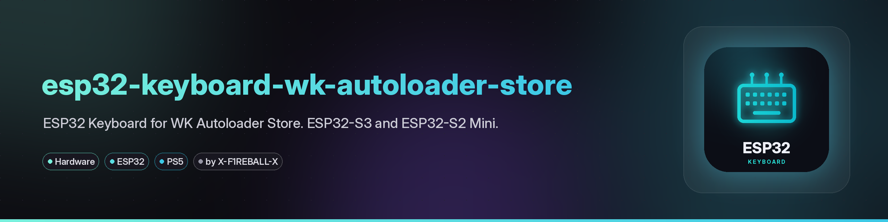
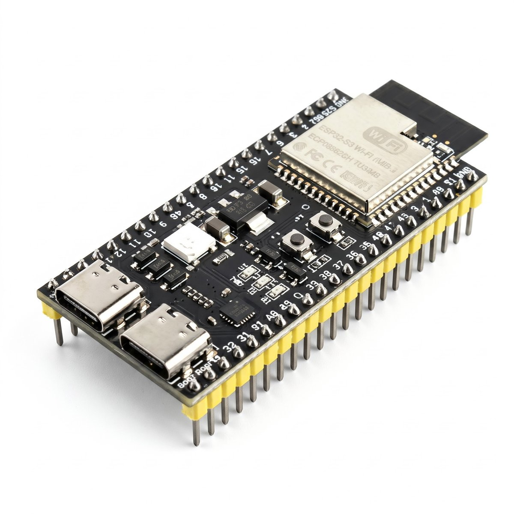
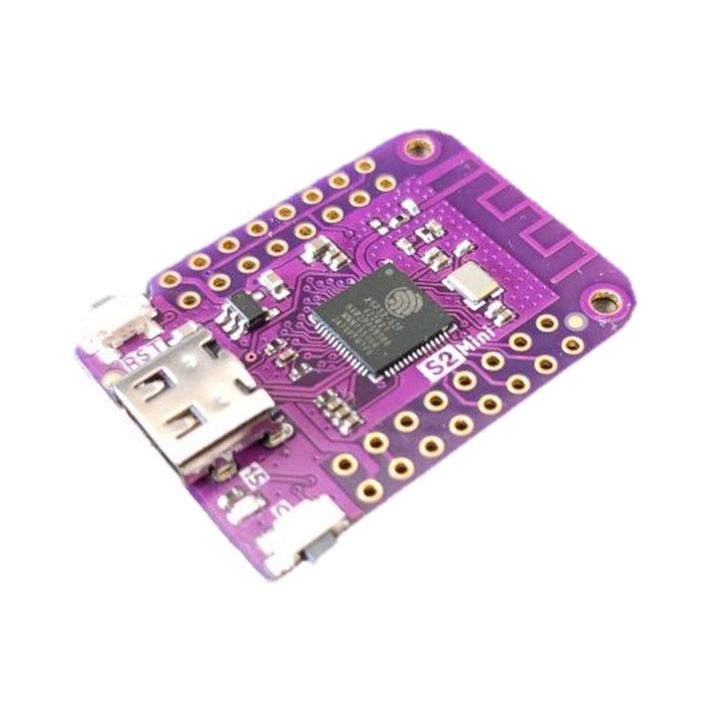

Firmware that turns an ESP32-S3 or ESP32-S2 Mini into a USB keyboard that opens WK Autoloader Store on every PS5 boot. The board only sends key presses. It contains no exploit, hosts no pages and sends no payloads.
Download v1.0.1Source on GitHubhttp://10.1.1.1 from the AutoStore network.

| Board | Flash file |
|---|---|
| ESP32-S3 DevKitC-1 N16R8 (16 MB flash, 8 MB PSRAM) | ESP32S3_Keyboard_WK_Autoloader_Store_V1.0.1.bin |
| ESP32-S2 Mini (Wemos/Lolin, 4 MB flash, 2 MB PSRAM) | ESP32S2_Mini_Keyboard_WK_Autoloader_Store_V1.0.1.bin |
ESP32-S3: the UART / COM port is for flashing and logs, the native USB port goes to the PS5. ESP32-S2 Mini has a single USB-C port used for both.
.bin for your board from the v1.0.1 release.921600, add the file at address 0x0 and click Program. It takes about 1 minute; success looks like Hash of data verified.
115200 and address 0x0. After Program finishes, press RST.AutoStore (password 12345678), open http://10.1.1.1 (http, not https), enter your home 2.4 GHz Wi-Fi name and password and save. Console IP and board IP are optional. The board reboots and joins your home network.AutoStore). On the next console boot the board opens WK Autoloader Store.The board runs on a restart or full power-on of the PS5. Waking from rest mode does not trigger it.
esptool.py --chip esp32s3 --port PORT --baud 921600 write_flash 0x0 ESP32S3_Keyboard_WK_Autoloader_Store_V1.0.1.bin18.5 seconds after the board gets power it runs data/config/nav_sequence.txt once:
0.3 LEFT
0.3 ENTEREach line is <delay_seconds> <KEY>; lines starting with # are comments. Supported keys: ENTER, ESC, BACKSPACE, TAB, SPACE, UP, DOWN, LEFT, RIGHT, PAGE_UP, PAGE_DOWN. If your Store tile is elsewhere, edit the file and upload the filesystem again with pio run -t uploadfs.
| Problem | Fix |
|---|---|
| Flasher cannot open the port | Use the UART/COM port; install the CH343 driver if needed |
| Board does not join home Wi-Fi | Use a 2.4 GHz network; reopen http://10.1.1.1 and save again |
| Keys do nothing | Native USB must be connected to the PS5; tune delays in nav_sequence.txt |
| Console is never found | Set the console IP on the setup page |
Serial logs: UART/COM port at 115200 baud.